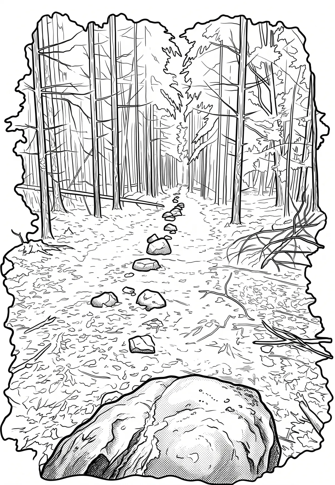

Kounovské kamenné řady
Kounovské kamenné řady se nacházejí v přírodním parku Džbán na náhorní plošině Rovina nad Kounovem v katastrálním území obce Domoušice v okrese Louny. Jedná se o památku nejasného stáří, účelu a původu. Lokalita je chráněna jako kulturní památka. Řady bývají považovány za pravěkou megalitickou observatoř, kultovní místo nebo za novověké meze polí, ale existují i další hypotézy.
Více na Wikipedii